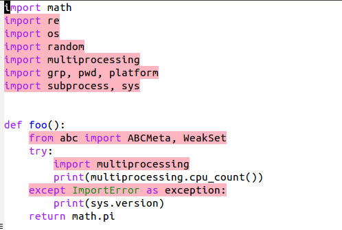

Auto Remove Python Unused Imports & Variables In Emacs
Unused code will distract you(and other people) while reading code. Also, a single unused import can cause out of memory error. So, it is considered as a bad practice. Lets try to get rid of unused imports & variables from Python code.
Autoflake removes unused imports and unused variables as reported by pyflakes. Install it\
$ pip install --upgrade autoflake
Now select a file which you want to clean and run this in terminal.
$ autoflake --in-place --remove-unused-variables example.py
It removes all unused imports & variables from the file.
Instead of running this command every time, I wrote a simple elisp function and assigned a F8 key to that function. So while writing the code itself it can clean it & it's much efficient.
;; Py-rm - Remove unused variables & imports from python (defun pyrm () (interactive) (setq command (concatenate 'string "autoflake --in-place --remove-unused-variables " buffer-file-name)) (shell-command command) ;; Reload the modified file (revert-buffer t t) ) ;; set a custom key for pyrm (global-set-key [f8] 'pyrm)
Put the above code in your emacs configuration file, restart it & press F8 whenever you want to clean the code.
However, if you just need to highlight but not delete them, you can install flymake and then enter this.
M-x flymake-mode RET
It just highlights the other syntax errors and unused imports but won\'t delete them.
Screenshots
Simple Python Code

Unused code highlighted with flymake-mode

Cleaned with autoflake

Need further help with this? Feel free to send a message.